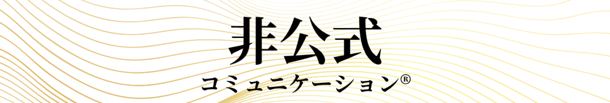

人生100年、どうつながる？
今の悩み、過去の記憶、社会での違和感
バラバラに見える点が
実は一つの形として重なり
起こっていることに気づいた時
縁は静かに
繋がりはじめる
PHILOSOPHY — BI-NŌ 美脳
「共感」という言葉は、同じでも中身が違う。
SNSでは「共感しました」が、日常的に増えた。
けれど孤独感も、関係の希薄さも、同じだけ増えている。
情報への反応と、人への共感は、本来別のもの。
ここに、美脳が接続する
まず到達すべき基準
――循環は、すでにここに巡っている
自己観
ありのままの自分を形成
現代は①②までは二項間で育ちやすく、
③④は三項間以上でしか育ちにくい。
自分を守るための距離が、いつしか関係そのものを遠ざけていないか。
目指す先は、遠い理想ではない。
美脳は、その二層を繋ぐ場所に立っている。
意欲が湧き上がっても、
相手が思うような反応をしてくれない。
それは
脳のOSが、旧いバージョンのまま――
最適化できていないだけ。
最新バージョンの動きがインストールされていないまま
未実装なだけかもしれません。
美脳調律プログラムでは
美脳―バージョンアップしたOSで
人生を欲張りに
関係性の質をあげる
おはなし会を開催しています
※お悩み相談ではなく
「循環力のシェア」メインの会です
STORY
